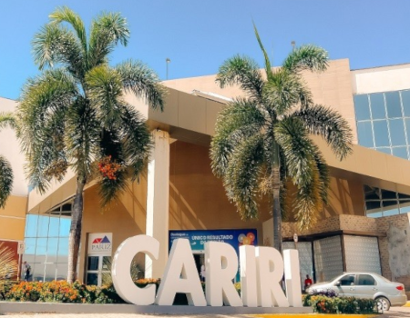
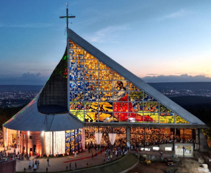
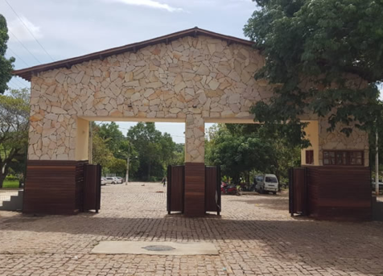
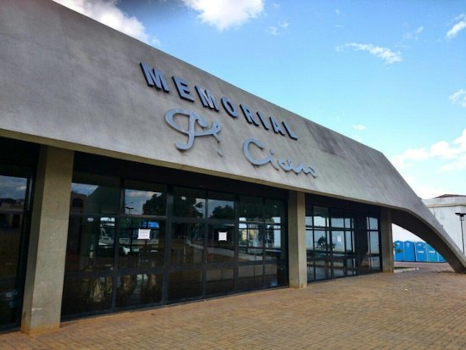
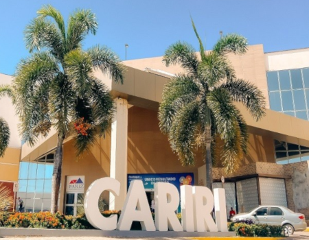
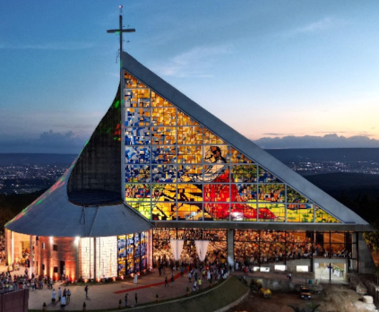
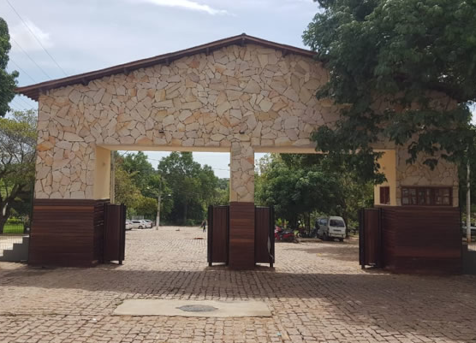
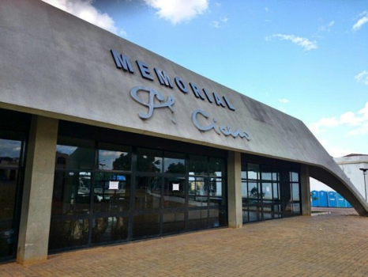
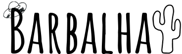
Uma jóia do Cariri Cearense
Barbalha, um dos municípios mais charmosos do Cariri cearense, carrega consigo uma história rica e complexa, marcada por diversas transformações e eventos que moldaram sua identidade.
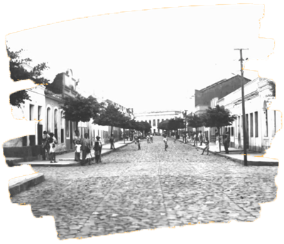
Antes da chegada dos colonizadores europeus, a região onde hoje se encontra Barbalha era habitada por povos indígenas. A cidade, como conhecemos hoje, teve suas origens em um pequeno povoado que se desenvolveu em torno de uma casa que servia de abrigo para tropeiros. A hospitalidade da dona da casa, conhecida como Barbalha, deu nome ao local.
Durante o período colonial, Barbalha se destacou como um importante centro econômico, graças à fertilidade do solo e à produção de algodão. A cidade também se tornou um ponto de encontro de viajantes e comerciantes, impulsionando seu crescimento urbano.
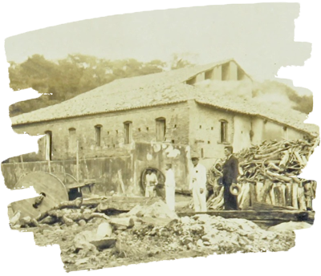
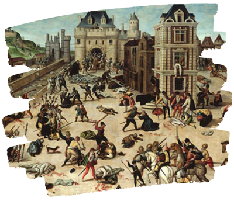
O século XIX foi marcado por diversas transformações sociais e políticas em Barbalha. A cidade participou ativamente de importantes movimentos históricos, como a Guerra dos Cabanos e a Revolta dos Beckman. Além disso, a abolição da escravatura e a proclamação da República também tiveram um grande impacto na sociedade barbalhense.

Hoje, Barbalha é uma cidade moderna e dinâmica, que preserva suas tradições e ao mesmo tempo se adapta às novas demandas da sociedade. O turismo cultural e religioso são importantes fontes de renda, e a cidade investe cada vez mais em infraestrutura e serviços para atender aos visitantes.
Personagens Históricos
Pontos Turísticos
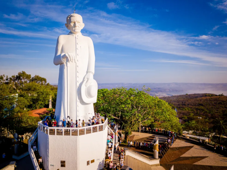
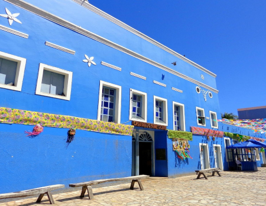
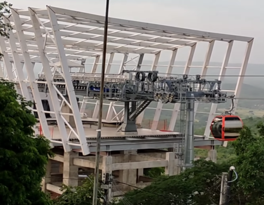
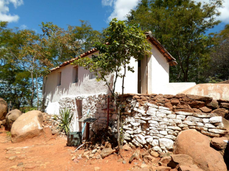
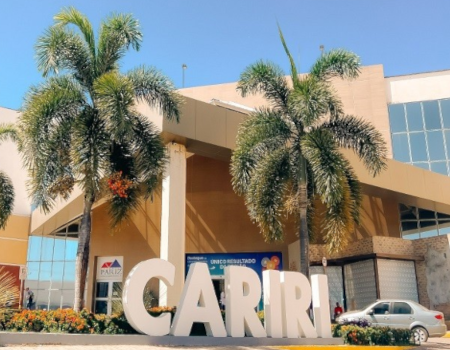
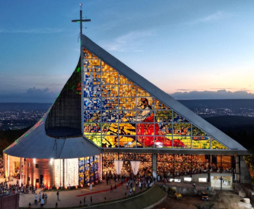
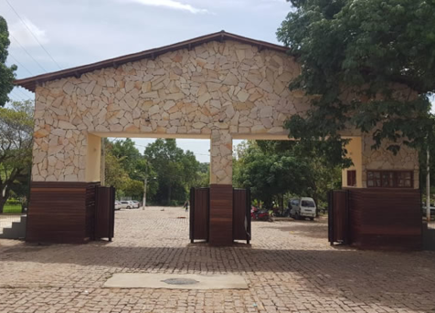
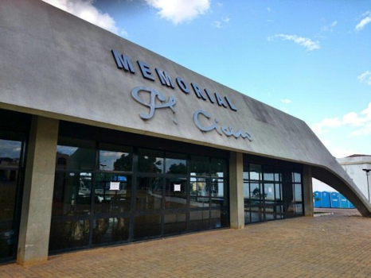
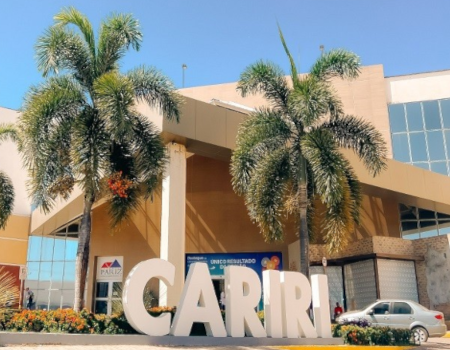
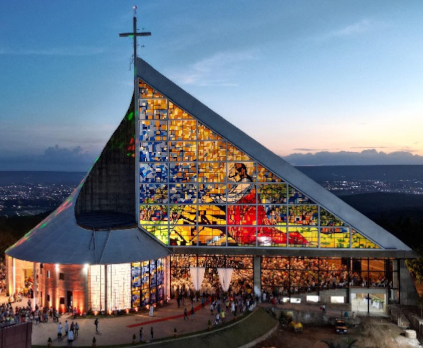
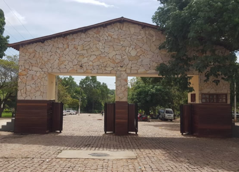
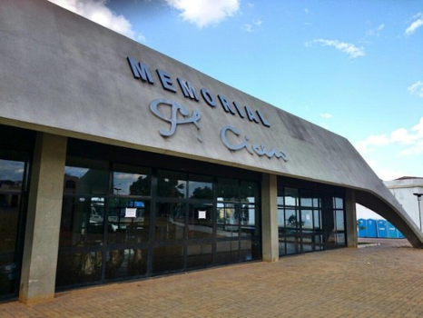